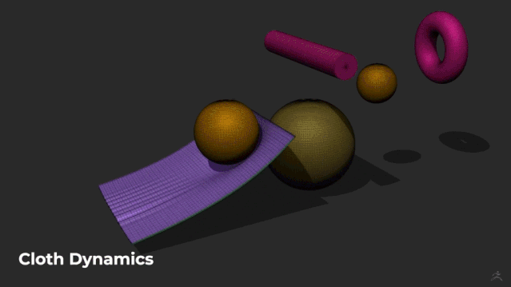
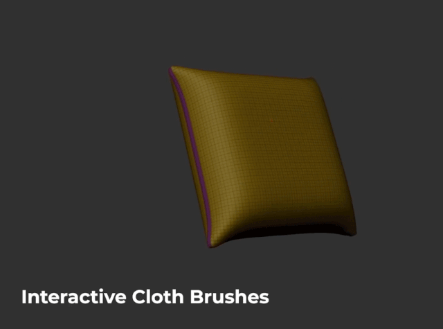
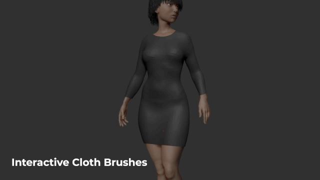
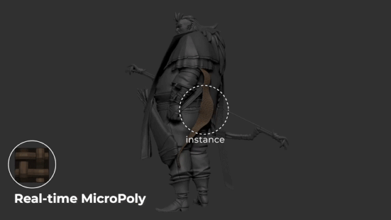
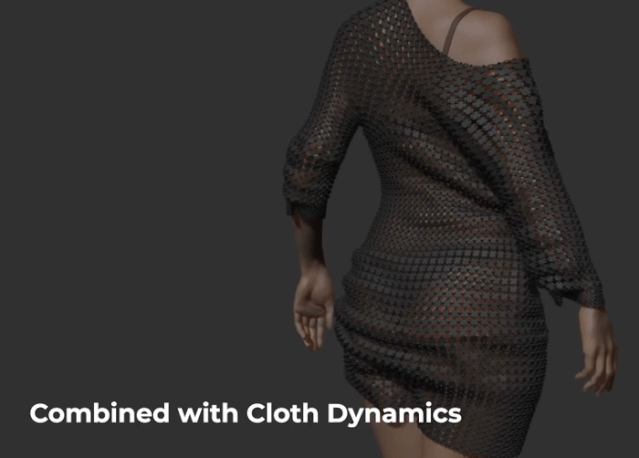
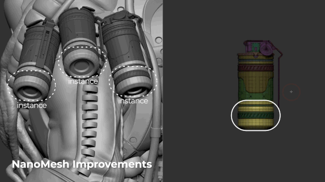
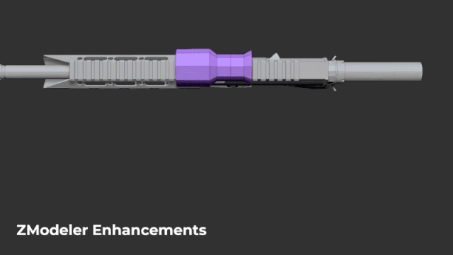
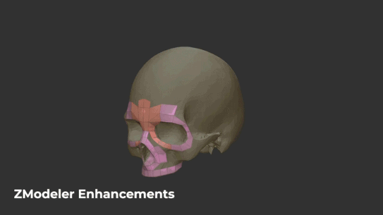
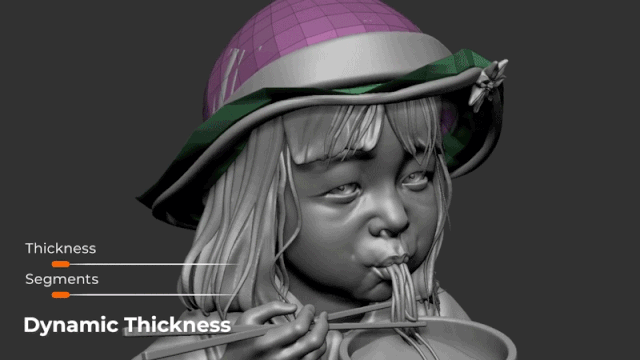

三维雕刻建模软件中文版/英文版 ZBrush 2021 Win破解版

http://player.youku.com/embed/XNDc5NzMyMDY3Ng==?_time=0.035
三维雕刻建模软件中文版/英文版 ZBrush 2021 Win破解版
ZBrush 为数字雕塑树立行业标杆。 强大功能使您能够在提供即时反馈的实时环境下，使用可定制笔刷系统完成虚拟黏土形状、纹理和绘制。在使用 ZBrush 时，您将获得与世界各地电影工作室、游戏开发人员、玩具/藏品制造商、珠宝设计师、汽车/航空设计师、插图画家和艺术家所用工具相同的卓越体验。
ZBrush 2021 introduces a Dynamics system along with Controlled Cloth Sculpting and a revisiting of our Dynamic Subdivision feature. We’ve also added new features to ZModeler, as well as introducing iMage 3D support to ZBrush and giving it the ability to open native-format files created by ZBrushCoreMini.
安装步骤：
安装ZBrush_2021_Installer.exe
拷贝zbrush.exe到安装目录下，替换完成破解
提取码：as12
ZBrush2021新功能说明
Cloth Dynamics
布料动力学，新增可实时布料演算的功能，具体根据不同的布料质感模拟不同的褶皱。实际能模拟多少种类布料要等软件更新后操作才可得知。

Interactive Cloth Brushes
交互式的布料笔刷，多次绘制布褶是可以互相作用，而不是简单的叠加在一起。

而且“ClothHook”笔刷还可以结合人体的姿势产生实时的衣褶。大大提升了制作效率。

Real-time MicroPoly
实时MicroPoly功能可以根据你的需要调节一些类似飘带的物体。并且可以随时更换不同的MicroPoly。

Combined with Cloth Dynamics
这个功能是Cloth Dynamics与MicroPoly各种预设结合的产物。通过布料动力学演算完成后再用MicroPoly设置来替换。

NanoMesh Improvements
NanoMesh进行了更新，更新后可以调整多个实例关联的物体，不管物体是怎样的角度或是在什么位置，只需要调整其中一个，其他的实例物体也会一起调整。

ZModeler Enhancements
ZModeler功能在2021的版本进行了增强。例如：
1、如图展示：瞄准镜挤压边（将边合并到中心）
2、手动拓补功能，和之前的先创建Z球再进行拓补不太一样，这次方便了很多。


Dynamic Thickness
动态厚度功能非常有用，做一些带有厚度的物体非常方便，如视频中的实例。还可以结合MicroPoly还将纹理直接替换上去。

- 本文标题：三维雕刻建模软件中文版/英文版 ZBrush 2021 Win破解版
- 本文作者：粥粥の辣椒酱
- 本文链接：https://cglook.github.io/posts/ZBrush2021/
- 版权声明：本博客所有文章除特别声明外，均采用 CC BY-NC-SA 4.0 许可协议。转载请注明出处！